关于作战
战略向导
最终战略目的当然是消灭敌人或捕获敌船，所以为了达到此目的就得制定好几种战略方案：1.比敌人更快地收集资源并且有效地使用资源；2.保护己方要害，打击敌人要害（如采集船、研究船）；3.有效地研究科技……
战术向导
在双方公平的条件下（不包括人机对战，有次竟看到从电脑母船同时出来两艘研究船），要想拉大敌我差距，就要在尽量减少自己损失的情况下尽量多消灭敌人。战略向导提到：“保护己方要害，打击敌人要害”，考虑到游戏开始时进攻比防守有利，因此刚开始时可以制造20艘SCOUT，战术属性为侵略，编成X形阵型，向着敌人的两个要害偷袭（如果自信自己是一流的战术家也可一开始就用SCOUT攻击敌人母船），在“采集模式”中，首选要害是采集船，“断粮”是自古以来兵法要点（如果是“我恨采集模式”，那就只能挑研究船了。），在早期成功地打掉敌人一两艘采集船，战争后期便可减少很多麻烦。把SCOUT埋伏在陨石区，敌船一过来就冲上去进攻，待双方距离靠近，让SCOUT取消命令，就可看见SCOUT停下来朝敌船不间断猛烈开火，通常敌采集船是有来无回。用墙形阵型亦可，不过最好不要用弱火力的球形阵型来对付非战斗单位。这一招在舰队对战时须慎用。
接下来是本妖最喜欢的布雷战术了。在敌人必经之路埋上人工智能太空机雷，让敌人乖乖走进陷阱里……呵呵呵！布雷战术有很多优点：机雷不要钱；机雷网不易发现；机雷威力大；机雷不伤害己方（布雷时还是偶尔会吓你一跳的）。但机雷布太多会拖慢机器速度，且一段时间后机雷会消失，所以还是慎用为妙。
在游戏中使用单一兵种作战会很吃亏。重型或超重型战舰要派小型战舰护航，否则遇上闻声而来的布雷舰就不妙了，（布雷舰：“我走！我停……我放！！我走！我停……我放！！”）用小型战舰以侵略球形阵型包围住布雷舰攻击很有效，而以小制小、以快制快的战术也不错，加上重型或超重型战舰在旁援护攻击，基本上问题不大。
重型或超重型战舰在攻击时再指定移动路线即可“边走边打”。
总之，熟用快捷键、精确处理敌人情报并灵活运用于战场上、珍惜自己一兵一卒，就可以在战场中保持不败。
FRIGATE CLASS简介
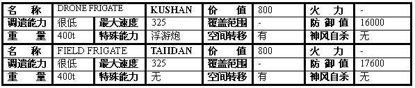
简介：KUSHAN的DRONE FRIGATE是一种浮游炮母舰，开启特殊能力时会飞出24个浮游炮以球形阵型保卫母舰，这些浮游炮可以打坏，而浮游炮母舰在一段时间后会制造出新的；TAIIDAN的FIELD
FRIGATE则是所有炮舰的克星，它本身没有攻击力，只能在自舰周围形成一道防御罩，把敌人的炮火全反弹回去。
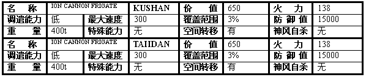
简介：重型离子炮战舰，价格性能比要比上一兵种高。
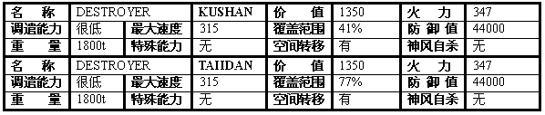
简介：两门离子炮、两门重炮的火力，直线进攻型的战舰。
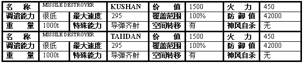
简介：我的最爱！！！全方位进攻型，四个导弹仓共储备有32枚导弹，打完还能补充；导弹齐射的特殊能力更能有效地对付敌人的小型舰海战术。要注意的是，导弹齐射完后要隔大约3～4秒才能再次开火。
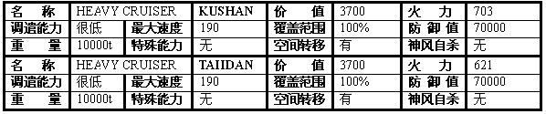
简介：最恐怖的超重型战舰，适合于直线型进攻，不过对付很多小型敌战舰就非常吃力了。
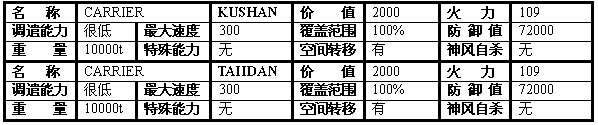
简介：航空母舰。可以制造除了超重型战舰的其他舰船，可以储存50艘小型战舰和40艘中型战舰，还能让采集船卸下资源。
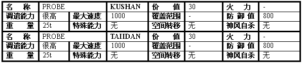
简介：初期侦察卫星。只能移动一次，但不能解雇。
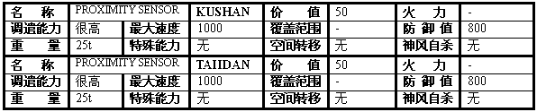
简介：可以解雇，也可无限次移动，主要目的是侦察敌人情况和迷惑敌人。
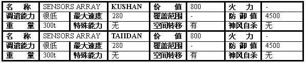
简介：制造出来就可以知道敌人的大致分布和母船所在。
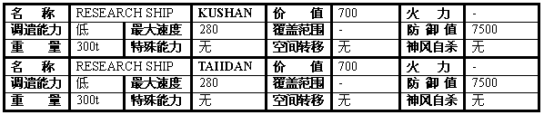
简介：研究船
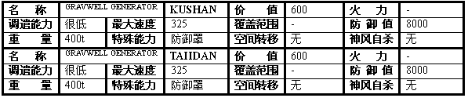
简介：很遗憾，这玩意儿我不太会用。
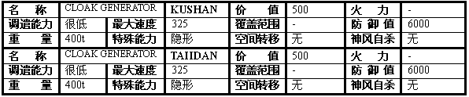
简介：好东西之一。隐形时能够将周围的大小战舰都隐形了，而那些战舰只有在隐形装置关闭或是开火的情况下才现形。(全文完)
|